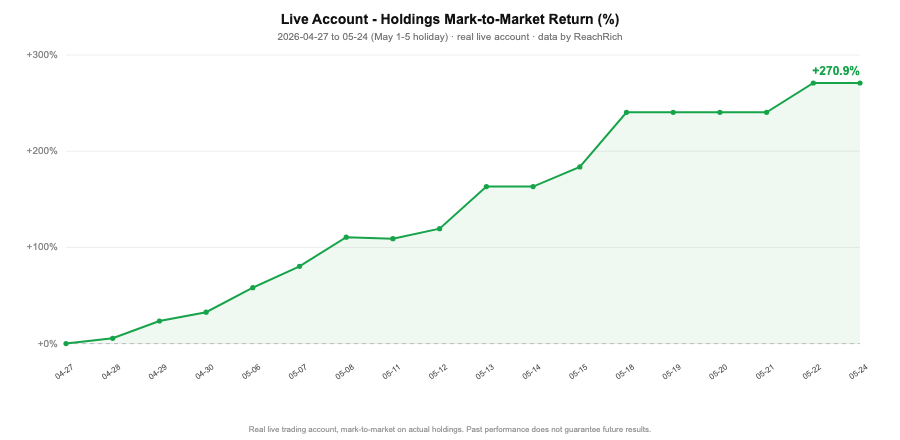

本页为数据研究展示，仅供研究用途，不作为投资参考依据；历史业绩不代表未来；不构成投资建议或荐股，不承诺任何收益。

因子库覆盖多类型，均经 DSR（Deflated Sharpe）多重检验校正与样本外验证。出于知识产权保护，仅展示类型与状态，不公开名称、公式与参数：
| 因子 | 类型 | 状态 | 样本外口径 |
|---|---|---|---|
| Factor A-07 | 微结构 | OOS 验证通过 | OOS-IC 正，DSR PASS |
| Factor B-12 | ML 合成 | OOS 验证通过 | DSR p<0.05 |
| Factor C-03 | 资金流 | 观察中 | — |
| Factor D-21 | 动量 | OOS 验证通过 | 多周期 IC 一致 |
| Factor E-09 | 反转 | OOS 验证通过 | 深跌放量 |
| Factor F-15 | 价量波动 | OOS 验证通过 | 振幅压缩突破 |
| Factor G-04 | 基本面 | 观察中 | — |
类型分布：动量 · 反转 · 价量波动 · 微结构 · 资金流 · 基本面 · ML 合成（7 大类，持续扩充）。 质量门槛：候选因子须通过 样本外（OOS）验证 + DSR 多重检验校正 + 交易成本 gate 方可进入实盘候选池；不达标进入观察/淘汰。
以下为回测口径，非实盘；实盘表现通常低于回测。历史业绩不代表未来，本平台不对任何收益作出承诺，亦不构成投资建议。
| 排名 | 策略类型 | 回测 Sharpe | 口径 |
|---|---|---|---|
| 1 | 动量 / 趋势启动 | 4.51 | 2025 年区间回测 |
| 2 | 组合优化（MVO，行业中性） | 3.72 | 70 日回测，5518 股 × 111 行业 |
| 3 | 多因子组合（MVO） | 2.37 | 70 日回测，命中率 57.1%，最大回撤 −1.20% |
| 4 | 风险约束组合 | 1.8+ | CPCV 交叉验证（防过拟合） |
详见 方法论。